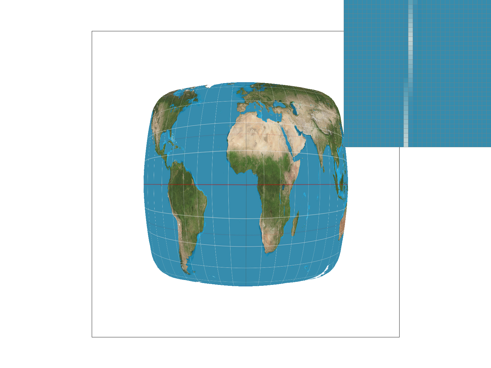
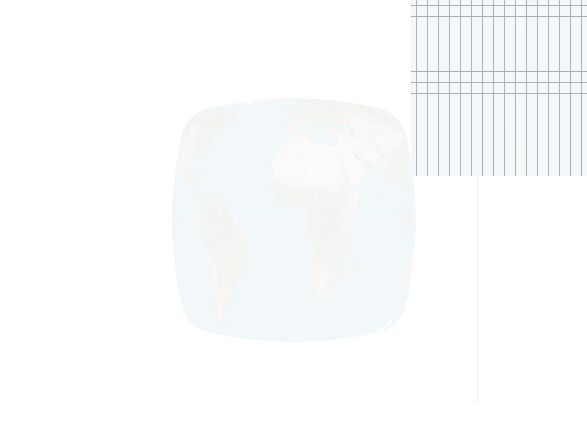

I modified the RasterizerImp::rasterize_triangle() function in rasterizer.cpp. I looped over the pixels inside a bounding box of the triangle and checked whether the pixel belongs to it by doing a three line test. Then if it belongs to the triangle, I would call the fill_pixel() function. Here is my three line test:
bool is_inside_triangle(
int i, int j,
float x0, float y0,
float x1, float y1,
float x2, float y2)
{
// check if the current pixel is inside the triangle
// perform the three line test
bool check1 = ((i - x0)*(y0 - y1) >= (j - y0)*(x0 - x1));
bool check2 = ((i - x1)*(y1 - y2) >= (j - y1)*(x1 - x2));
bool check3 = ((i - x2)*(y2 - y0) >= (j - y2)*(x2 - x0));
// account for both winding directions, if triangle has normals pointing in opposite directions
return (check1 && check2 && check3) || (!check1 && !check2 && !check3);
}
As explained in the previous bullet point, my algorithm pretty much checks every single point within the bounding box, and then saves it into the sample buffer through the fill_pixel() function if the pixel is inside the triangle.
For my supersampling algorithm,
rasterize_triangle() function.resolve_to_framebuffer function, I iterated over the pixels and computed the average value of mini-pixels, and then colored the target buffer pixels with the resulting averaged color. Supersampling is useful because it helps us get rid of the jaggies by blurring the high-frequency areas with an averaged colors.
sample_rate = 1:

sample_rate = 4:

sample_rate = 16:

After comparing these images, we can see that for sample_rate = 4, the sharper edge became more blurry, and therefore, the entire triangle became more continuous. This is expected, according to the algorithm described above. However, something that I noticed is that the images for sample rates 4 and 16 look identical.
my_robot.svg is saved under the docs/directory. Some of things that I modified:
robot.svg:

my_robot.svg:

Barycentric coordinates allow you representing a point in a triangle using a set of three points and different weights.
svg/basic/test7.svg:

// implement nearest neighbor sampling // map the Color to whatever it is in the texture coordinates auto& mip = mipmap[level]; uv.x = (mip.width-1); uv.y = (mip.height-1);
return mip.get_texel(uv.x, uv.y);
}
2. bilinear sampling - here, we look up the colors of the four nearest texels instead, and then blend these colors together using a weighted average. Here is the implementation:
```cpp
Color Texture::sample_bilinear(Vector2D uv, int level) {
auto& mip = mipmap[level];
// zero-th level here
// map the Color to whatever it is in the texture coordinates
float x = uv.x * (mip.width - 1);
float y = uv.y * (mip.height - 1);
float x_frac = x - floor(x); // fractional offsets s and t (from the slides)
float y_frac = y - floor(y);
Color c1 = mip.get_texel(floor(x), floor(y));
Color c2 = mip.get_texel(floor(x), ceil(y));
Color c3 = mip.get_texel(ceil(x), ceil(y));
Color c4 = mip.get_texel(ceil(x), floor(y));
Color c12 = c1 + x_frac*(c4 + (-1*c1));
Color c34 = c2 + x_frac*(c3 + (-1*c2));
Color c1234 = c12 + y_frac*(c34 + (-1*c12));
return c1234;
}
Nearest samling at 1 sample per pixel:
Bilinear samling at 1 sample per pixel: 
Nearest samling at 16 samples per pixel:
Bilinear samling at 16 samples per pixel: 
The comparison of these images are below:
Analysis: I chose this image for the analysis because it demonstrates that latitude lines are intermittent with nearest sampling, but it gets smoother with bilinear sampling. Unfortunately, I couldn't figure out why the image is fading away at 16 samples per pixel (because supersampling averaging worked all well with all the other tasks). I would imagine that all the other images have more or less constant colors in the images (like solid blue triangles and solid red tiled flowers), so the averaging of those yields the same color. In this image, however, the colors are changing very rapidly, so when you sum everything up and divide by the sample rate, you get something close to white color.----
Explain level sampling in your own words and describe how you implemented it for texture mapping.
Level sampling is the process of selecting an appropriate mipmap level for a pixel, based on the level of detail with which we want to render (usually based on size and distance from the viewer). We pick between different level sampling variations by pressing different keystrokes (as defined in Texture::sample() function):
Color Texture::sample(const SampleParams& sp) {
// get the level of the mipmap
// sample the texture at that level
// return the color
if (sp.lsm == L_ZERO) {
return sample_nearest(sp.p_uv, 0);
}
else if (sp.lsm == L_NEAREST) {
return sample_nearest(sp.p_uv, get_level(sp));
}
else if (sp.lsm == L_LINEAR) {
float level = get_level(sp);
float level_frac = level - floor(level);
Color c1 = sample_bilinear(sp.p_uv, floor(level));
Color c2 = sample_bilinear(sp.p_uv, ceil(level));
Color c12 = c1 + level_frac*(c2 + (-1*c1));
return c12;
}
else {
return Color(0, 1, 0);
}
}
for texture mapping, you compute a mipmap level:
float Texture::get_level(const SampleParams& sp) {
//Calculate the difference vectors sp.p_dx_uv - sp.p_uv and sp.p_dy_uv - sp.p_uv inside Texture::get_level, and finally
Vector2D duv_dx = sp.p_dx_uv - sp.p_uv;
Vector2D duv_dy = sp.p_dy_uv - sp.p_uv;
//Scale up the difference vectors accordingly by the width and height of the full-resolution texture image.
duv_dx.x *= width;
duv_dx.y *= height;
duv_dy.x *= width;
duv_dy.y *= height;
// compute the level of the mipmap
// sqrt(dudx^2 + dvdx^2) + sqrt(dudy^2 + dvdy^2)
// based on the slides
float L = max(sqrt(duv_dx.norm2()), sqrt(duv_dy.norm2()));
float D = log2(L);
cout << D << endl;
return D;
}
increasing number of samples per pixel:
Using a png file you find yourself, show us four versions of the image, using the combinations of L_ZERO and P_NEAREST, L_ZERO and P_LINEAR, L_NEAREST and P_NEAREST, as well as L_NEAREST and P_LINEAR.
To use your own png, make a copy of one of the existing svg files in svg/texmap/ (or create your own modelled after one of the provided svg files). Then, near the top of the file, change the texture filename to point to your own png. From there, you can run ./draw and pass in that svg file to render it and then save a screenshot of your results.
Note: Choose a png that showcases the different sampling effects well. You may also want to zoom in/out, use the pixel inspector, etc. to demonstrate the differences.